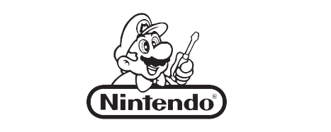

Super Mario Bross - O Filme
Baseado no mundo dos jogos de Mario da Nintendo, o filme convida o público a entrar em um novo universo vibrante e emocionante, diferente de qualquer outro criado antes, em um exuberante evento de comédia cinematográfica repleto de ação. Mario é um encanador junto com seu irmão Luigi. Um dia, eles vão parar no reino dos cogumelos, governado pela Princesa Peach, mas ameaçado pelo rei dos Koopas, que faz de tudo para conseguir reinar em todos os lugares.